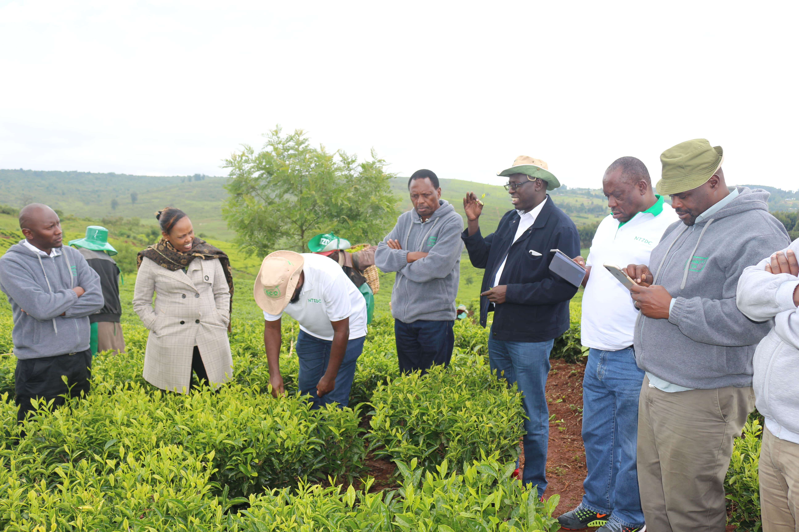

Founded in 1986 under Gazette Notice No. 265 (State Corporation Act, Cap 466), NTZDC was established to protect Kenya’s gazetted forests by creating buffer zones of tea and assorted tree species, blending environmental conservation with sustainable livelihoods.
